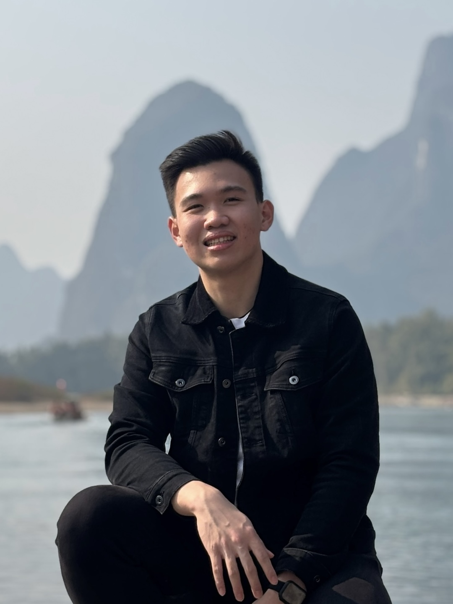
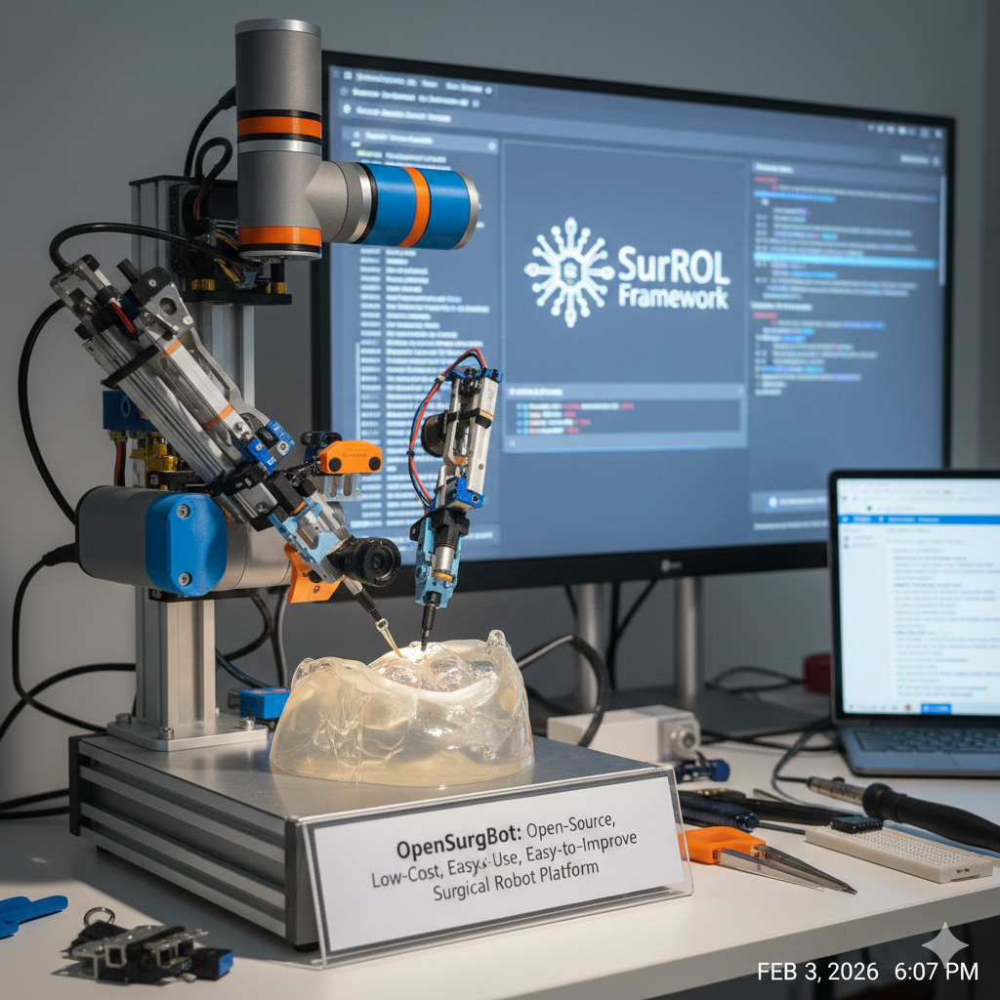

I am a Master’s Student at Shanghai Jiao Tong University, specializing in Control Science and Engineering under the supervision of Professor Yutong Ban within the Surgical & Intelligent Robot & Innovative Unmanned Systems (SIRIUS) Laboratory.
My academic foundation includes a Bachelor’s degree in Electrical Engineering (Second Class Honours, Upper Division) from The Chinese University of Hong Kong, Shenzhen, where I developed a core understanding in electronics and system control.
Beyond the laboratory, I am driven by a commitment to discipline and community impact. I approach my professional and personal life with the mindset of an endurance athlete, applying the same rigor used in marathon training to the pursuit of technical innovation.
Guided by my faith, I am also dedicated to build a community, specifically focused on fostering deep and transformative relationships centered on the teachings of Jesus. I strive to lead by example, integrating technical precision with a heart of service to empower the next generation of leaders.

Open-Source Surgical Robotics: Development and optimization of the opensurgbot platform to improve accessibility in robotic-assisted surgery.
Embedded Systems & Real-time Control: Implementation of high-performance control loops on STM32 microcontrollers using C and the HAL library.
Mechatronic System Integration: Designing the synergy between mechanical hardware and electronic control for precision surgical instruments.
Interested in collaborating on surgical robotics or embedded systems? Reach out via email.
An open-source surgical robotics platform designed for research and accessibility.
Developed real-time control loops on STM32 for precision instrument manipulation within the SIRIUS Lab environment.
